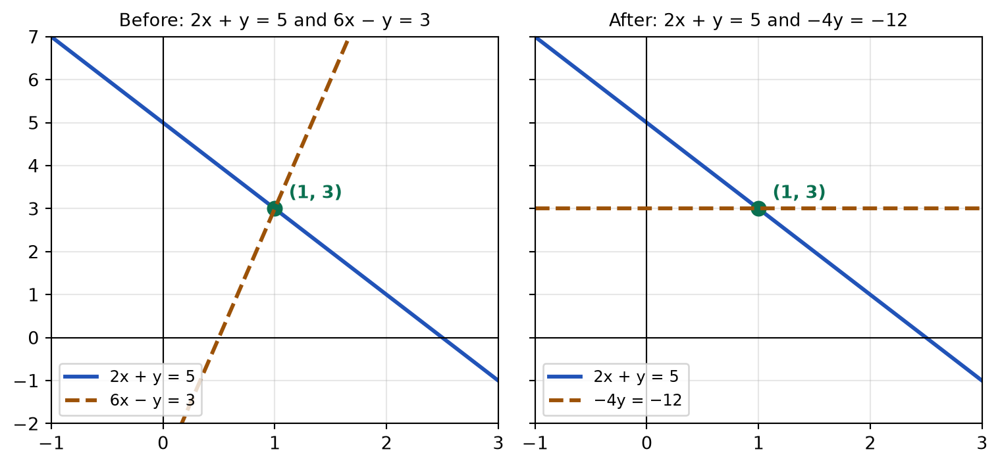
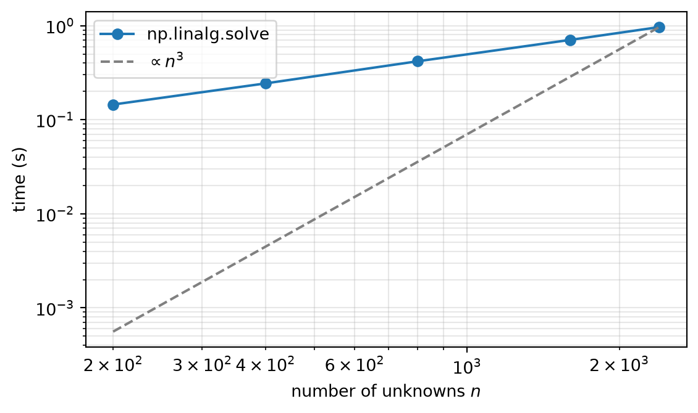

Gaussian elimination is the standard method for solving systems of linear equations. It is the method you would use by hand for three equations, and, with the refinements in Chapter 25, it is the method inside the solvers of Python, MATLAB and every engineering package for systems with millions of unknowns.
The idea is the one you already use for simultaneous equations: subtract multiples of one equation from another to eliminate unknowns, until the last equation has only one unknown left. Then work backwards.
11.1 Build intuition
Here is the key fact behind the whole method. Each step replaces the system with a simpler one that has exactly the same solutions. In two dimensions, each equation is a line, and the solution is the point where the lines cross. Subtracting a multiple of one equation from another swaps one line for a different line through the same crossing point. Elimination keeps swapping lines until one of them is horizontal or vertical, and the answer can be read off.
You have probably done this already, with simultaneous equations at school. Take \[
\begin{aligned}
2x + y &= 5 \\
6x - y &= 3.
\end{aligned}
\] Subtract 3 times the first equation from the second. The \(x\) terms cancel, because \(6x - 3(2x) = 0\), and what is left is \[
-4y = -12,
\] so \(y = 3\). Putting this back into the first equation, \(2x + 3 = 5\), so \(x = 1\).
Figure 11.1 shows what the subtraction did. The new second equation, \(-4y = -12\), is a different line from \(6x - y = 3\): it is horizontal. But it passes through the same crossing point, \((1, 3)\), because any \(x\) and \(y\) that satisfy both of the original equations also satisfy the new one. The system is simpler, and its solution hasn’t changed. Gaussian elimination is this step, organised so that it works for any number of equations.
Show the code for this figure
import numpy as npimport matplotlib.pyplot as pltt = np.linspace(-1, 3, 2)fig, axes = plt.subplots(1, 2, figsize=(8, 3.8), sharey=True)for ax, title inzip(axes, ["Before: 2x + y = 5 and 6x − y = 3", "After: 2x + y = 5 and −4y = −12"]): ax.plot(t, 5-2* t, color="#2153b8", lw=2.2, label="2x + y = 5") ax.plot(1, 3, "o", color="#0a7050", ms=8) ax.annotate("(1, 3)", (1, 3), xytext=(8, 6), textcoords="offset points", color="#0a7050", fontweight="bold") ax.axhline(0, color="black", lw=0.8); ax.axvline(0, color="black", lw=0.8) ax.set_xlim(-1, 3); ax.set_ylim(-2, 7); ax.set_xticks(range(-1, 4)); ax.grid(alpha=0.3) ax.set_title(title, fontsize=10)axes[0].plot(t, 6* t -3, color="#9c5208", lw=2.2, ls="--", label="6x − y = 3")axes[1].plot(t, 0* t +3, color="#9c5208", lw=2.2, ls="--", label="−4y = −12")for ax in axes: ax.legend(loc="lower left", fontsize=9)plt.tight_layout()plt.show()

Figure 11.1: One step of elimination. Subtracting 3 times the first equation from the second replaces the second line (dashed) by a horizontal one through the same crossing point, so the solution can be read off: y = 3, and then x = 1.
With three or more unknowns there are more lines (or planes) and more steps, so it pays to be systematic about which multiple of which equation to subtract, and in what order. That is what this chapter sets out.
11.2 The ideas
The augmented matrix
As in Chapter 10, write the system as \(\M{A}\vect{x} = \vect{b}\). For example, the system
\[
\begin{aligned}
2x + y - z &= 8 \\
-3x - y + 2z &= -11 \\
-2x + y + 2z &= -3
\end{aligned}
\tag{11.1}\]
Each row is one equation. The vertical line stands for the equals signs.
Row operations
The row operations of Chapter 6 are exactly the steps you use to solve simultaneous equations by hand. All three change a system without changing its solutions:
Add a multiple of one row to another, written \(R_i \leftarrow R_i - m R_j\).
Swap two rows, written \(R_i \leftrightarrow R_j\).
Multiply a row by a non-zero number, written \(R_i \leftarrow c R_i\).
Each operation can be undone by another row operation, so no solutions are gained or lost. The proof is in Section C.5.
Gaussian elimination only needs the first operation, plus the second when a zero gets in the way.
Forward elimination
The aim is row echelon form: an upper triangular shape with zeros below the diagonal.
Work column by column. In column \(k\), the entry on the diagonal, \(a_{kk}\), is the pivot. For each row \(i\) below it, compute the multiplier
\[
m_{ik} = \frac{a_{ik}}{a_{kk}},
\]
and replace row \(i\) with \(R_i - m_{ik} R_k\). This makes the entry in column \(k\) of row \(i\) zero. When every column is done, the matrix is in row echelon form.
The pivot must not be zero, because we divide by it. If it is, swap with a lower row that has a non-zero entry in that column. Chapter 25 explains why, in practice, you should also swap when the pivot is merely small.
Back substitution
The last row of the echelon form has one unknown, so solve it first. Substitute that value into the row above, which then has one unknown left, and so on up to the first row. For an upper triangular system \(\M{U}\vect{x} = \vect{c}\),
Back substitution. Read the rows from the bottom up.
\[
\begin{aligned}
-z &= 1 \;\Rightarrow\; z = -1 \\
\tfrac{1}{2} y + \tfrac{1}{2}(-1) &= 1 \;\Rightarrow\; y = 3 \\
2x + 3 - (-1) &= 8 \;\Rightarrow\; x = 2
\end{aligned}
\]
So \(\vect{x} = \mat{2 \\ 3 \\ -1}\). Check in the second original equation: \(-3(2) - 3 + 2(-1) = -11\). ✓
When things go wrong
Elimination also tells you when there is no unique solution. Suppose a row reduces to all zeros on the left of the line.
If it reads \(\amat{ccc|c}{0 & 0 & 0 & 5}\), it says \(0 = 5\). The system is inconsistent and has no solution.
If it reads \(\amat{ccc|c}{0 & 0 & 0 & 0}\), it says \(0 = 0\). That equation was a combination of the others, and the system has infinitely many solutions (as long as no other row is inconsistent).
Chapter 12 shows how to write down all the solutions in the second case.
NoteExample 2: a zero pivot
Solve \[
\begin{aligned}
y + z &= 3 \\
x + y + z &= 6 \\
2x + 3y + z &= 11.
\end{aligned}
\]
Solution. The first pivot position holds 0, because \(x\) is missing from the first equation. Swap rows 1 and 2, which just lists the equations in a different order, then eliminate as usual: \[
\amat{rrr|r}{0 & 1 & 1 & 3 \\ 1 & 1 & 1 & 6 \\ 2 & 3 & 1 & 11}
\xrightarrow{R_1 \,\leftrightarrow\, R_2}
\amat{rrr|r}{1 & 1 & 1 & 6 \\ 0 & 1 & 1 & 3 \\ 2 & 3 & 1 & 11}
\xrightarrow{R_3 \,\leftarrow\, R_3 - 2R_1}
\amat{rrr|r}{1 & 1 & 1 & 6 \\ 0 & 1 & 1 & 3 \\ 0 & 1 & -1 & -1}
\]\[
\xrightarrow{R_3 \,\leftarrow\, R_3 - R_2}
\amat{rrr|r}{1 & 1 & 1 & 6 \\ 0 & 1 & 1 & 3 \\ 0 & 0 & -2 & -4}.
\] Back substitution: \(-2z = -4\) gives \(z = 2\); then \(y + 2 = 3\) gives \(y = 1\); then \(x + 1 + 2 = 6\) gives \(x = 3\). This is the Zero pivot example in the app.
NoteExample 3: infinitely many solutions
Solve \[
\begin{aligned}
x + y + 2z &= 4 \\
2x + 3y + 3z &= 9 \\
x + 2y + z &= 5.
\end{aligned}
\]
Solution.\[
\amat{rrr|r}{1 & 1 & 2 & 4 \\ 2 & 3 & 3 & 9 \\ 1 & 2 & 1 & 5}
\xrightarrow[R_3 \,\leftarrow\, R_3 - R_1]{R_2 \,\leftarrow\, R_2 - 2R_1}
\amat{rrr|r}{1 & 1 & 2 & 4 \\ 0 & 1 & -1 & 1 \\ 0 & 1 & -1 & 1}
\xrightarrow{R_3 \,\leftarrow\, R_3 - R_2}
\amat{rrr|r}{1 & 1 & 2 & 4 \\ 0 & 1 & -1 & 1 \\ 0 & 0 & 0 & 0}.
\] The last row says \(0 = 0\): the third equation was a combination of the first two (it is row 2 minus row 1). There is no pivot in column 3, so \(z\) can take any value. Call it \(t\). Back substitution then gives \(y = 1 + t\) and \(x = 4 - (1 + t) - 2t = 3 - 3t\), so \[
\vect{x} = \mat{3 \\ 1 \\ 0} + t\mat{-3 \\ 1 \\ 1}
\] for every number \(t\): a line of solutions, in the form of Equation 10.1.
Watching elimination step by step
The app below carries out elimination one row operation at a time, on the augmented matrix. Press Next step and read the explanation under the matrix at each stage: it names the pivot, the multiplier and the row operation. Then try the other starting systems, or type in your own.
In One solution, which entry does each step turn into zero? Why does the method never need to go back to a column it has finished?
In Zero pivot, the very first pivot is zero, so there is nothing to divide by. Which row operation fixes it?
Compare the last row of the reduced matrix in No solution and Infinitely many. The systems differ in a single number. Match each one with a case in the list above.
How the cost grows
How long does elimination take for a large system? When eliminating column \(k\), each of the \(n - k\) rows below the pivot needs about \(2(n - k)\) arithmetic operations. Adding these up,
Back substitution needs only about \(n^2\) operations, so elimination dominates. Doubling the number of unknowns multiplies the work by about eight. That is why large problems need the structure-aware methods in Chapter 26 and Chapter 27.
Show the code for this plot
import timeimport numpy as npimport matplotlib.pyplot as pltdef best_time(f, repeats=3):"""Shortest of several timings, to reduce noise.""" best =float("inf")for _ inrange(repeats): t0 = time.perf_counter() f() best =min(best, time.perf_counter() - t0)return bestrng = np.random.default_rng(1)sizes = [200, 400, 800, 1600, 2400]times = []for n in sizes: M = rng.standard_normal((n, n)) v = rng.standard_normal(n) times.append(best_time(lambda: np.linalg.solve(M, v)))fig, ax = plt.subplots(figsize=(6, 3.6))ax.loglog(sizes, times, "o-", label="np.linalg.solve")ref = [times[-1] * (n / sizes[-1]) **3for n in sizes]ax.loglog(sizes, ref, "--", color="grey", label=r"$\propto n^3$")ax.set_xlabel("number of unknowns $n$")ax.set_ylabel("time (s)")ax.legend()ax.grid(True, which="both", alpha=0.3)plt.tight_layout()plt.show()

Figure 11.2: Time taken by NumPy’s solver as the system grows, on log scales. The dashed line has slope 3, the rate predicted by the operation count.
For small \(n\), other overheads hide the \(n^3\) growth; it shows clearly once the systems are large.
11.3 In code
The function below follows the method exactly: a loop over pivot columns, an inner loop over the rows below, then back substitution. It stops with an error if it meets a zero pivot. Chapter 25 adds row swaps.
import numpy as npdef gaussian_elimination(A, b):"""Solve Ax = b by Gaussian elimination without pivoting.""" A = np.array(A, dtype=float) # work on copies b = np.array(b, dtype=float) n =len(b)# Forward eliminationfor k inrange(n -1):if A[k, k] ==0:raiseValueError(f"Zero pivot in row {k +1}: a row swap is needed")for i inrange(k +1, n): m = A[i, k] / A[k, k] # multiplier A[i, k:] -= m * A[k, k:] b[i] -= m * b[k]# Back substitution x = np.zeros(n)for i inrange(n -1, -1, -1): x[i] = (b[i] - A[i, i +1:] @ x[i +1:]) / A[i, i]return xA = [[2, 1, -1], [-3, -1, 2], [-2, 1, 2]]b = [8, -11, -3]print(gaussian_elimination(A, b))
[ 2. 3. -1.]
In practice, use the library solver, which adds pivoting and is far faster:
print(np.linalg.solve(A, b))
[ 2. 3. -1.]
A= [21-1;-3-12;-212];b= [8;-11;-3];x=gaussian_elimination(A,b)functionx=gaussian_elimination(A,b)% Solve Ax = b by Gaussian elimination without pivoting.n=length(b);% Forward eliminationfork=1:n-1ifA(k,k) ==0error('Zero pivot in row %d: a row swap is needed',k);endfori=k+1:nm=A(i,k) /A(k,k);% multiplierA(i,k:n) =A(i,k:n) -m*A(k,k:n);b(i) =b(i) -m*b(k);endend% Back substitutionx=zeros(n,1);fori=n:-1:1x(i) = (b(i) -A(i,i+1:n) *x(i+1:n)) /A(i,i);endend
x =
2
3
-1
In practice, use the backslash operator, which adds pivoting and is far faster:
x=A\b
Functions defined in a script must come at the end of the file (MATLAB R2016b or later). You can also save the function in its own file, gaussian_elimination.m.
11.4 Check your understanding
TipIn Example 1, which multiple of row 1 was added to row 3, and why?
The multiplier is \(m_{31} = a_{31}/a_{11} = -2/2 = -1\), so the operation is \(R_3 \leftarrow R_3 - (-1)R_1 = R_3 + R_1\). This makes the first entry of row 3 equal to \(-2 + 2 = 0\).
TipAfter elimination, the last row of an augmented matrix is \(\amat{ccc|c}{0 & 0 & 0 & 4}\). What does that tell you?
The row says \(0x + 0y + 0z = 4\), which is impossible. The system has no solution.
TipSolving a system with 1000 unknowns takes 0.05 seconds. Roughly how long would 3000 unknowns take?
The cost grows like \(n^3\), and \(3^3 = 27\), so about \(27 \times 0.05 \approx 1.4\) seconds.
11.5 Key ideas
The three row operations (swap two rows, scale a row, add a multiple of one row to another) never change the solutions of a system.
Forward elimination uses them to make zeros below each pivot, column by column, until the matrix is in row echelon form.
Back substitution then finds the unknowns one at a time, from the last equation up.
A zero pivot needs a row swap. A row \([0 \; \cdots \; 0 \mid c]\) with \(c \neq 0\) means no solution, and a column without a pivot means infinitely many.
Elimination costs about \(\tfrac{2}{3}n^3\) operations, so doubling the size of a system makes it about 8 times slower to solve.
11.6 Exercises
Solve by Gaussian elimination: \[
x + y + z = 6,
\]\[
2x + 3y + z = 11,
\]\[
x + 2y + 3z = 14.
\]
Show that this system has no solution, and describe what that means for the three planes: \[
x + y + z = 2,
\]\[
x + 2y + 3z = 5,
\]\[
2x + 3y + 4z = 8.
\]
Change the right-hand side of the last equation in Exercise 2 from 8 to 7. Show that the system now has infinitely many solutions, and write them in terms of \(z\).
Explain why the gaussian_elimination function fails for \[
\M{A} = \mat{0 & 1 \\ 1 & 1},
\]\[
\vect{b} = \mat{1 \\ 2},
\] even though the system has a unique solution. Find the solution by hand.
Use the pivots in Example 1 to find the determinant of the coefficient matrix (see the last point of Going further), and check your answer by cofactor expansion.
Code. Add a counter to the gaussian_elimination function that counts every multiplication, division, addition and subtraction. Run it on random systems with \(n = 10, 20, 40, 80\), and compare the counts with \(\tfrac{2}{3}n^3\).
Gaussian elimination, in the form of the LU decomposition of Chapter 13, solves the equations of structural analysis, circuit simulation, chemical process models and least-squares fits. Library solvers such as NumPy’s np.linalg.solve and MATLAB’s backslash call LAPACK, a library of carefully tuned routines that add pivoting and make good use of the processor’s memory.
11.8 Going further
The multipliers \(m_{ik}\) are not wasted: storing them gives the factorisation \(\M{A} = \M{L}\M{U}\), which solves further systems with the same matrix much faster. See Chapter 13.
Without row swaps, small pivots can magnify rounding errors enormously. See Chapter 25.
The determinant of \(\M{A}\) is the product of the pivots (times \(-1\) for each row swap). For large matrices this is how determinants are actually computed.
Why row operations preserve the solution set: Section C.5.